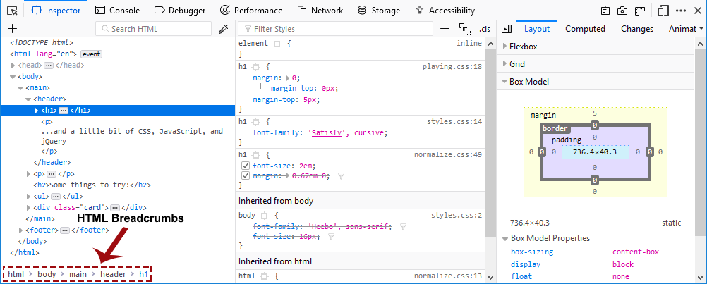

You can examine and edit the page's HTML in the HTML pane.
Navigating the HTML
HTML breadcrumbs
At the bottom on the HTML pane is a breadcrumbs toolbar. This shows the complete hierarchy through the document for the branch containing the selected element:

Hovering over a breadcrumb highlights that element in the page.
The breadcrumbs bar has its own keyboard shortcuts.
Note that before Firefox 48, the breadcrumbs toolbar was at the top of the markup pane.
Searching
Starting in Firefox 45, the Page Inspector's search box matches all markup in the current document and in any frames.
To start searching the markup, click in the search box to expand it or press Ctrl + F , or Cmd + F on a Mac.
As you type, an autocomplete popup shows any class or ID attributes that match the current search term:
Press Up and Down to cycle through suggestions, Tab to choose the current suggestion, then Enter to select the first node with that attribute.
If you just enter the search term without selecting an autocomplete value, then the search term will be applied to the full text of the document, including all attribute names and values and the text content of nodes.
To cycle through matches, press Enter . From Firefox 48 onwards you can cycle backwards through matches using Shift + Enter .
HTML tree
The rest of the pane shows you the page's HTML as a tree (this UI is also called the Markup View). Just to the left of each node is an arrow: click the arrow to expand the node. If you hold the Alt key while clicking the arrow, it expands the node and all the nodes underneath it.
Moving the mouse over a node in the tree highlights that element in the page.
Nodes that are not visible are shown faded/desaturated. This can have different reasons like using display: none or that the element doesn't have any dimensions.
From Firefox 53 onwards there is an ellipsis shown between the opening and closing tag of an element when the node is collapsed if it has larger contents. Before Firefox 53, it was impossible to determine if a collapsed node had any children. Now children are indicated in the tree with this icon:
Note: There are some useful keyboard shortcuts that can be used in the HTML tree — see the HTML pane keyboard shortcuts list.
::before and ::after
You can inspect pseudo-elements added using ::before and ::after:
Custom element definition
When you open the Inspector on a page that includes custom elements, you can view the class definition for the custom element in the Debugger:
- Inspect the element
- Click on the word
custom
The source for the element's class will be displayed in the Debugger.
Whitespace-only text nodes
Web developers don’t write all their code in just one line of text. They use white space such as spaces, returns, or tabs between their HTML elements because it makes markup more readable.
Usually this white space seems to have no effect and no visual output, but in fact, when a browser parses HTML it will automatically generate anonymous text nodes for elements not contained in a node. This includes white space (which is after all a type of text).
If these auto generated text nodes are inline level, browsers will give them a non-zero width and height. Then you will find strange gaps between elements, even if you haven’t set any margin or padding on them.
Since Firefox 52, the Inspector displays these whitespace nodes, so you can see where the gaps in your markup come from. Whitespace nodes are represented with a dot: and you get an explanatory tooltip when you hover over them:
To see this in action, see the demo at https://mdn.github.io/devtools-examples/whitespace-only-demo/index.html.
Shadow roots
Any shadow roots present in the DOM are exposed in the HTML page in the same manner as the regular DOM. The shadow root is signified by a node named #shadow-root — you can click its expansion arrow to see the full contents of the shadow DOM, and then manipulate the contained nodes in a similar way to other part of the page's DOM (although with a limited featureset — you can't, for example, drag and drop or delete shadow DOM nodes).
If a shadow DOM contains a "slotted" element (an element with a slot attribute after it has been inserted inside a <slot> element — see Adding flexibility with slots for an explanation of how these are used), the "slotted" element will be shown inside its corresponding <slot> element, with a "reveal" link alongside it. Clicking the "reveal" link will highlight the element with the slot attribute as it exists outside the shadow DOM
This is very useful when you've got a <slot> element and you can't find the source of its content.
Note: Shadow DOM inspection was implemented in Firefox 61, but was currently hidden behind the dom.webcomponents.shadowdom.enabled pref until Firefox 63. It is now turned on by default.
Element popup context menu
You can perform certain common tasks on a specific node using a popup context menu. To activate this menu, context-click the element. The menu contains the following items — click on the links to find the description of each command in the Context menu reference:
- Edit As HTML
- Create New Node
- Duplicate Node
- Delete Node
- Attributes
- :hover
- :active
- :focus
- Copy
- Paste
- Expand All
- Collapse
- Scroll Into View
- Screenshot Node
- Use in Console
- Show DOM Properties
- Open Link in New Tab *
- Open File in Debugger *
- Open File in Style-Editor *
- Copy Link Address *
* These options only appear in certain contexts, for example the "Open File in Style-Editor" option only appears when you context-click over the top of a link to a CSS file.
Context menu reference
Note: The context menu was significantly reorganised from Firefox 49 onwards, to make it more compact. Don't worry if your menu structure differs slightly to that shown above — the same options will still be available.
| Edit as /en-US/docs/HTML | Edit the element's HTML. |
| (Copy) Inner HTML | Copy the inner HTML for the element. |
| (Copy) Outer HTML |
Copy the outer HTML for the element. Pressing Ctrl + C (or Cmd + C on a Mac) also performs this action. |
| (Copy) Unique Selector/CSS Selector | Copy a CSS selector that uniquely selects the element. |
| (Copy) CSS Path | Copy a CSS selector that represents the full path to the element. |
| (Copy) Image Data-URL | Copy image as a data:// URL, if the selected element is an image. |
| (Copy) Attribute | Copy the attribute of the element. |
| Show DOM P/en-US/docs/roperties | Open the split console and enter the console command "inspect($0)" to inspect the currently selected element. |
| Use in Console |
New in Firefox 43(Copy) Image Data-URL (Copy) Attribute temp0 (or temp1 if temp0 is already taken, and so on), then opens the split console, enabling you to interact with that node using the console's command line. |
| Expand All |
New in Firefox 44 |
| Collapse |
New in Firefox 44 |
| (Paste) Inner HTML | Paste the clipboard contents into the node as its innerHTML. |
| (Paste) Outer HTML | Paste the clipboard contents into the node as its outerHTML. |
| (Paste) Before | Paste the clipboard contents into the document immediately before this node. |
| (Paste) After | Paste the clipboard contents into the document immediately after this node. |
| (Paste) As First Child | Paste the clipboard contents into the document as the first child of this node. |
| (Paste) As Last Child | Paste the clipboard contents into the document as the last child of this node. |
| Scroll Into View |
Scrolls the web page so the selected node is visible. From Firefox 44, pressing the keyboard shortcut S will also scroll the selected node into view. |
| Screenshot Node | Takes a screenshot of the selected node, saved to your Downloads directory. See Taking screenshots. |
| Create New Node | Create a new empty <div> as the last child of the currently selected element. See Inserting new nodes. |
| Duplicate Node |
New in Firefox 44 |
| Delete Node | Delete the element from the DOM. |
| Attribute/Add Attribute |
New in Firefox 44 |
| Attribute/Edit Attribute |
New in Firefox 44 |
| Attribute/Remove Attribute |
New in Firefox 44 |
| Open Link in New Tab | (only when invoked over a link, such as an href attribute) Opens the linked item in a new tab. |
| Open File in Debugger | (only when invoked over a link to a JS source) Opens the linked source in the Debugger. |
| Open File in Style-Editor | (only when invoked over a link to a CSS source) Opens the linked source in the Style Editor. |
| Copy Link Address | (only when invoked over a URL) Copy the URL. |
| :hover | Set the :hover CSS pseudo-class. |
| :active | Set the :active CSS pseudo-class. |
| :focus | Set the :focus CSS pseudo-class. |
Editing HTML
You can edit the HTML — tags, attributes, and content — directly in the HTML pane: double-click the text you want to edit, change it, and press Enter to see the changes reflected immediately.
To edit an element's outerHTML, activate the element's popup menu and select "Edit As HTML". You'll see a text box in the HTML pane:
You can add any HTML in here: changing the element's tag, changing existing elements, or adding new ones. Once you click outside the box, the changes are applied to the page.
Starting in Firefox 52, if you're editing HTML, the context menu you'll see is the normal one for working with editable text:
Copy and paste
You can use the popup menu to copy nodes in the HTML tree and paste them into the desired location.
Drag and drop
You can edit HTML by moving nodes in the HTML tree. Just click and hold on any element and drag it up or down in the tree. When you release the mouse button, the element will be inserted at the corresponding position:
Starting in Firefox 44, you can cancel the drag and drop by pressing the Esc key.
Inserting new nodes
Starting in Firefox 48, there's a "+" icon at the top of the markup view:
Click this icon to insert an empty <div> into the document as the last child of the currently selected element. You can then edit the new node's content and styling just as you would any other node in the document.
You can access the same functionality using the "Create New Node" popup menu item.
Note that this button is disabled if the selected element's type is such that adding a last-child would have no effect (for example, if is is an <html> or <iframe> element). However, it is enabled in places where it is not valid to insert a <div>, such as <style> or <link>. In these cases the element is added as text.